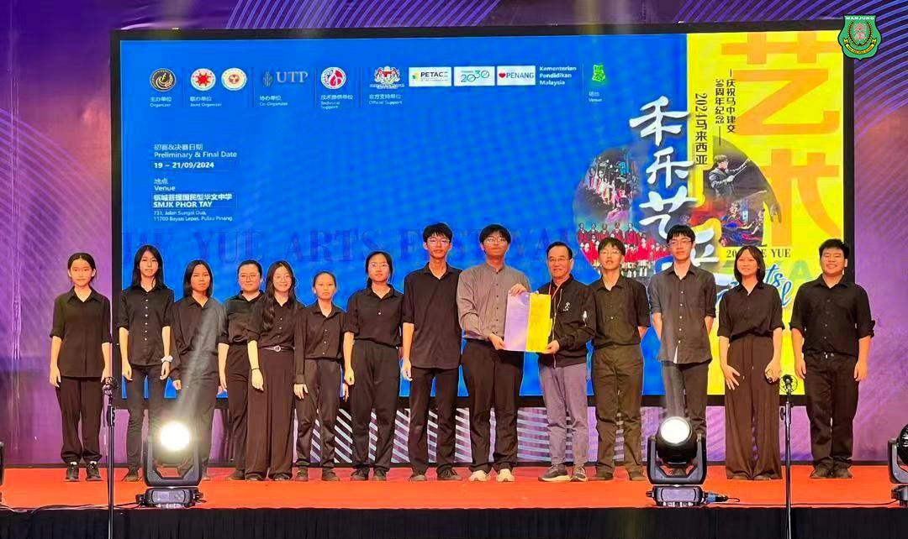
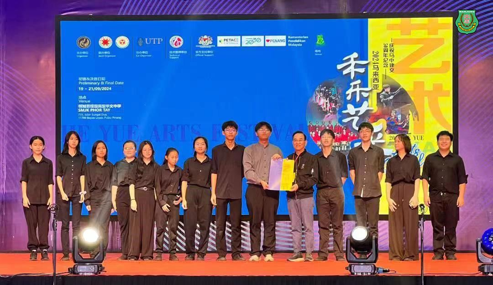
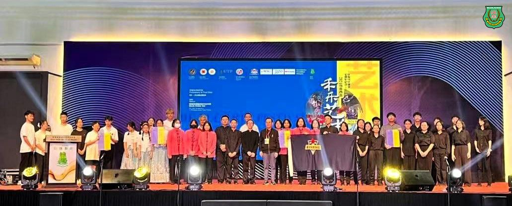
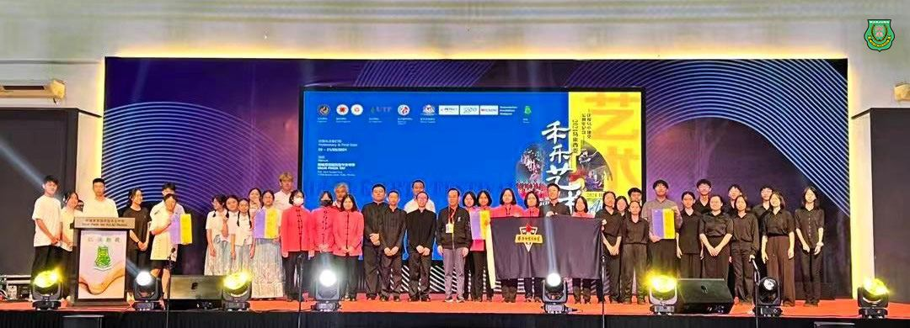
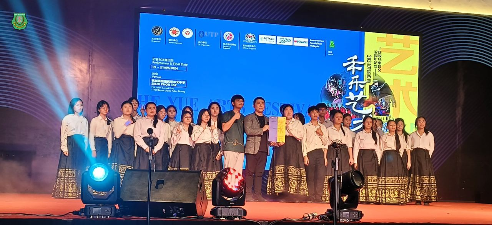
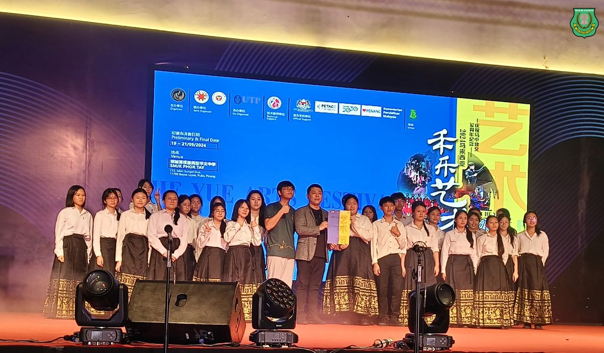
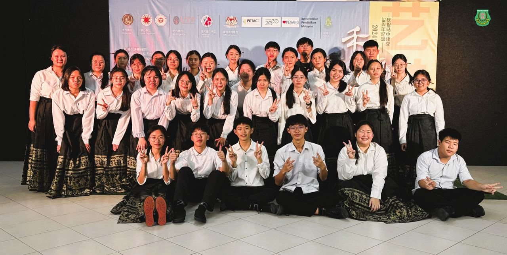
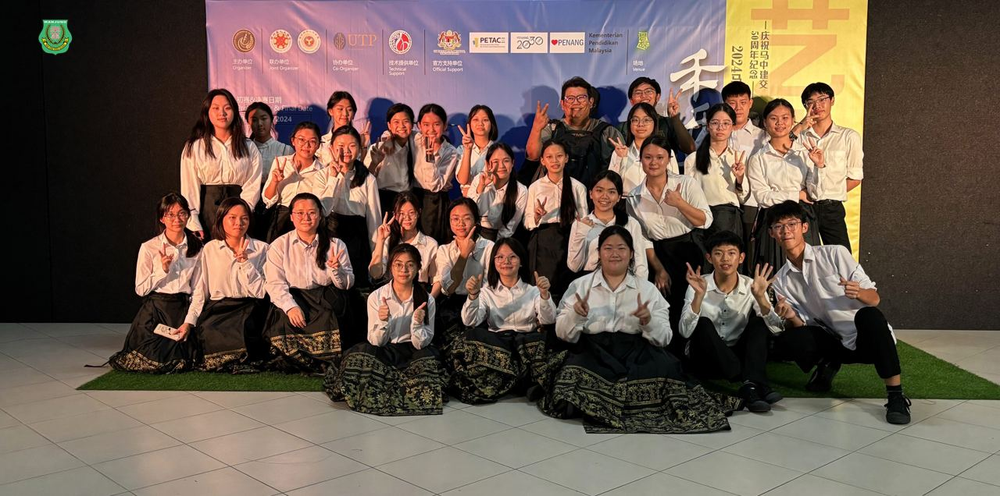

2024马来西亚禾乐艺术节
2024马来西亚禾乐艺术节
南华独中华乐团勇夺双金
曼绒南华独中华乐团于日前举行的2024马来西亚禾乐艺术节中表现出色，在多个项目中斩获佳绩，勇夺双金载誉而归。
华乐大合奏大赛（中学组）中，南华独中凭借气势磅礴的《骏马奔驰》摘得金奖。更令人振奋的是，在中学组华乐齐奏赛中，南华独中以《秦王点兵》一曲获得荣誉金奖第四名的好成绩。
南华独中校长陈丽冰博士对华乐团的表现深感自豪，并表示此次成绩不仅是学生辛勤苦练的成果，更是“德智体美劳”五育的综合体现，更进一步突显了本校在艺术教育方面的重视与培育。陈校长表示，华乐团成立历史悠久，在本校中有着悠长深厚的文化底蕴，希望此次比赛能够为学生立下信心，为更高的艺术成就而拼搏。
华乐团教练饶顺意老师对学生们的表现给予赞赏，并认为华乐团能在这样高水平的比赛中获得如此好的成绩，证明了学生平日训练的成效。《秦王点兵》和《骏马奔驰》不仅是重视技术性的曲目，更是希望能够借由此次的选曲推广中华文化，为增进文化交流做出贡献。
负责老师陈广宏老师表示，学生不仅课后留校练习，更是在假期期间返校打磨演奏技术，为此衷心赞赏学生们的积极配合及努力。陈老师表示，此次同时派出两支队伍参加不同的项目具有一定的挑战，然而学生不俗的表现成就了如今的收获，并劝勉学生时刻保持日臻向上的心态，为下次比赛做好准备。







